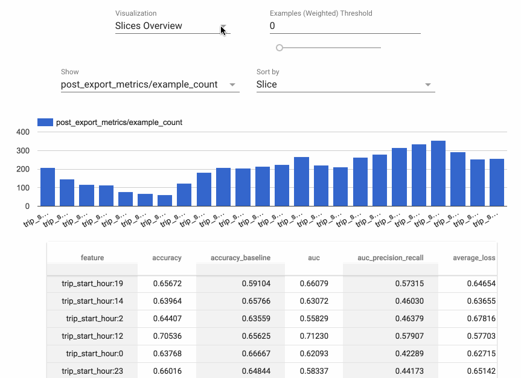

TensorFlow Model Analysis¶
TensorFlow Model Analysis (TFMA) is a library for evaluating TensorFlow models. It allows users to evaluate their models on large amounts of data in a distributed manner, using the same metrics defined in their trainer. These metrics can be computed over different slices of data and visualized in Jupyter notebooks.

Caution: TFMA may introduce backwards incompatible changes before version 1.0.
Installation¶
The recommended way to install TFMA is using the PyPI package:
pip install tensorflow-model-analysis
Build TFMA from source¶
To build from source follow the following steps:
Install the protoc as per the link mentioned: protoc
Create a virtual environment by running the commands
python3 -m venv <virtualenv_name>
source <virtualenv_name>/bin/activate
pip3 install setuptools wheel
git clone https://github.com/tensorflow/model-analysis.git
cd model-analysis
python3 setup.py bdist_wheel
This will build the TFMA wheel in the dist directory. To install the wheel from dist directory run the commands
Nightly Packages¶
TFMA also hosts nightly packages at https://pypi-nightly.tensorflow.org on Google Cloud. To install the latest nightly package, please use the following command:
pip install -i https://pypi-nightly.tensorflow.org/simple tensorflow-model-analysis
This will install the nightly packages for the major dependencies of TFMA such as TensorFlow Metadata (TFMD), TFX Basic Shared Libraries (TFX-BSL).
Note: These nightly packages are unstable and breakages are likely to happen. The fix could often take a week or more depending on the complexity involved.
Currently, TFMA requires that TensorFlow is installed but does not have an explicit dependency on the TensorFlow PyPI package. See the TensorFlow install guides for instructions.
To enable TFMA visualization in Jupyter Notebook:
jupyter nbextension enable --py widgetsnbextensionjupyter nbextension enable --py tensorflow_model_analysis
Note: If Jupyter notebook is already installed in your home directory, add
--user to these commands. If Jupyter is installed as root, or using a virtual
environment, the parameter --sys-prefix might be required.
Jupyter Lab¶
As of writing, because of https://github.com/pypa/pip/issues/9187, pip install
might never finish. In that case, you should revert pip to version 19 instead of
20: pip install "pip<20".
Using a JupyterLab extension requires installing dependencies on the command line. You can do this within the console in the JupyterLab UI or on the command line. This includes separately installing any pip package dependencies and JupyterLab labextension plugin dependencies, and the version numbers must be compatible.
The examples below use 0.27.0. Check available versions below to use the latest.
Jupyter Lab 1.2.x¶
pip install tensorflow_model_analysis==0.27.0
jupyter labextension install tensorflow_model_analysis@0.27.0
jupyter labextension install @jupyter-widgets/jupyterlab-manager@1.1
Jupyter Lab 2¶
pip install tensorflow_model_analysis==0.27.0
jupyter labextension install tensorflow_model_analysis@0.27.0
jupyter labextension install @jupyter-widgets/jupyterlab-manager@2
Troubleshooting¶
Check pip packages:
Check extensions:
Notable Dependencies¶
TensorFlow is required.
Apache Beam is required; it's the way that efficient distributed computation is supported. By default, Apache Beam runs in local mode but can also run in distributed mode using Google Cloud Dataflow and other Apache Beam runners.
Apache Arrow is also required. TFMA uses Arrow to represent data internally in order to make use of vectorized numpy functions.
Getting Started¶
For instructions on using TFMA, see the get started guide.
Compatible Versions¶
The following table is the TFMA package versions that are compatible with each other. This is determined by our testing framework, but other untested combinations may also work.
| tensorflow-model-analysis | apache-beam[gcp] | pyarrow | tensorflow | tensorflow-metadata | tfx-bsl |
|---|---|---|---|---|---|
| GitHub master | 2.65.0 | 10.0.1 | nightly (2.x) | 1.17.1 | 1.17.1 |
| 0.48.0 | 2.65.0 | 10.0.1 | 2.17 | 1.17.1 | 1.17.1 |
| 0.47.1 | 2.60.0 | 10.0.1 | 2.16 | 1.16.1 | 1.16.1 |
| 0.47.0 | 2.60.0 | 10.0.1 | 2.16 | 1.16.1 | 1.16.1 |
| 0.46.0 | 2.47.0 | 10.0.0 | 2.15 | 1.15.0 | 1.15.1 |
| 0.45.0 | 2.47.0 | 10.0.0 | 2.13 | 1.14.0 | 1.14.0 |
| 0.44.0 | 2.40.0 | 6.0.0 | 2.12 | 1.13.1 | 1.13.0 |
| 0.43.0 | 2.40.0 | 6.0.0 | 2.11 | 1.12.0 | 1.12.0 |
| 0.42.0 | 2.40.0 | 6.0.0 | 1.15 / 2.10 | 1.11.0 | 1.11.0 |
| 0.41.1 | 2.40.0 | 6.0.0 | 1.15 / 2.9 | 1.10.0 | 1.10.1 |
| 0.41.0 | 2.40.0 | 6.0.0 | 1.15 / 2.9 | 1.10.0 | 1.10.1 |
| 0.40.0 | 2.38.0 | 5.0.0 | 1.15 / 2.9 | 1.9.0 | 1.9.0 |
| 0.39.0 | 2.38.0 | 5.0.0 | 1.15 / 2.8 | 1.8.0 | 1.8.0 |
| 0.38.0 | 2.36.0 | 5.0.0 | 1.15 / 2.8 | 1.7.0 | 1.7.0 |
| 0.37.0 | 2.35.0 | 5.0.0 | 1.15 / 2.7 | 1.6.0 | 1.6.0 |
| 0.36.0 | 2.34.0 | 5.0.0 | 1.15 / 2.7 | 1.5.0 | 1.5.0 |
| 0.35.0 | 2.33.0 | 5.0.0 | 1.15 / 2.6 | 1.4.0 | 1.4.0 |
| 0.34.1 | 2.32.0 | 2.0.0 | 1.15 / 2.6 | 1.2.0 | 1.3.0 |
| 0.34.0 | 2.31.0 | 2.0.0 | 1.15 / 2.6 | 1.2.0 | 1.3.1 |
| 0.33.0 | 2.31.0 | 2.0.0 | 1.15 / 2.5 | 1.2.0 | 1.2.0 |
| 0.32.1 | 2.29.0 | 2.0.0 | 1.15 / 2.5 | 1.1.0 | 1.1.1 |
| 0.32.0 | 2.29.0 | 2.0.0 | 1.15 / 2.5 | 1.1.0 | 1.1.0 |
| 0.31.0 | 2.29.0 | 2.0.0 | 1.15 / 2.5 | 1.0.0 | 1.0.0 |
| 0.30.0 | 2.28.0 | 2.0.0 | 1.15 / 2.4 | 0.30.0 | 0.30.0 |
| 0.29.0 | 2.28.0 | 2.0.0 | 1.15 / 2.4 | 0.29.0 | 0.29.0 |
| 0.28.0 | 2.28.0 | 2.0.0 | 1.15 / 2.4 | 0.28.0 | 0.28.0 |
| 0.27.0 | 2.27.0 | 2.0.0 | 1.15 / 2.4 | 0.27.0 | 0.27.0 |
| 0.26.1 | 2.28.0 | 0.17.0 | 1.15 / 2.3 | 0.26.0 | 0.26.0 |
| 0.26.0 | 2.25.0 | 0.17.0 | 1.15 / 2.3 | 0.26.0 | 0.26.0 |
| 0.25.0 | 2.25.0 | 0.17.0 | 1.15 / 2.3 | 0.25.0 | 0.25.0 |
| 0.24.3 | 2.24.0 | 0.17.0 | 1.15 / 2.3 | 0.24.0 | 0.24.1 |
| 0.24.2 | 2.23.0 | 0.17.0 | 1.15 / 2.3 | 0.24.0 | 0.24.0 |
| 0.24.1 | 2.23.0 | 0.17.0 | 1.15 / 2.3 | 0.24.0 | 0.24.0 |
| 0.24.0 | 2.23.0 | 0.17.0 | 1.15 / 2.3 | 0.24.0 | 0.24.0 |
| 0.23.0 | 2.23.0 | 0.17.0 | 1.15 / 2.3 | 0.23.0 | 0.23.0 |
| 0.22.2 | 2.20.0 | 0.16.0 | 1.15 / 2.2 | 0.22.2 | 0.22.0 |
| 0.22.1 | 2.20.0 | 0.16.0 | 1.15 / 2.2 | 0.22.2 | 0.22.0 |
| 0.22.0 | 2.20.0 | 0.16.0 | 1.15 / 2.2 | 0.22.0 | 0.22.0 |
| 0.21.6 | 2.19.0 | 0.15.0 | 1.15 / 2.1 | 0.21.0 | 0.21.3 |
| 0.21.5 | 2.19.0 | 0.15.0 | 1.15 / 2.1 | 0.21.0 | 0.21.3 |
| 0.21.4 | 2.19.0 | 0.15.0 | 1.15 / 2.1 | 0.21.0 | 0.21.3 |
| 0.21.3 | 2.17.0 | 0.15.0 | 1.15 / 2.1 | 0.21.0 | 0.21.0 |
| 0.21.2 | 2.17.0 | 0.15.0 | 1.15 / 2.1 | 0.21.0 | 0.21.0 |
| 0.21.1 | 2.17.0 | 0.15.0 | 1.15 / 2.1 | 0.21.0 | 0.21.0 |
| 0.21.0 | 2.17.0 | 0.15.0 | 1.15 / 2.1 | 0.21.0 | 0.21.0 |
| 0.15.4 | 2.16.0 | 0.15.0 | 1.15 / 2.0 | n/a | 0.15.1 |
| 0.15.3 | 2.16.0 | 0.15.0 | 1.15 / 2.0 | n/a | 0.15.1 |
| 0.15.2 | 2.16.0 | 0.15.0 | 1.15 / 2.0 | n/a | 0.15.1 |
| 0.15.1 | 2.16.0 | 0.15.0 | 1.15 / 2.0 | n/a | 0.15.0 |
| 0.15.0 | 2.16.0 | 0.15.0 | 1.15 | n/a | n/a |
| 0.14.0 | 2.14.0 | n/a | 1.14 | n/a | n/a |
| 0.13.1 | 2.11.0 | n/a | 1.13 | n/a | n/a |
| 0.13.0 | 2.11.0 | n/a | 1.13 | n/a | n/a |
| 0.12.1 | 2.10.0 | n/a | 1.12 | n/a | n/a |
| 0.12.0 | 2.10.0 | n/a | 1.12 | n/a | n/a |
| 0.11.0 | 2.8.0 | n/a | 1.11 | n/a | n/a |
| 0.9.2 | 2.6.0 | n/a | 1.9 | n/a | n/a |
| 0.9.1 | 2.6.0 | n/a | 1.10 | n/a | n/a |
| 0.9.0 | 2.5.0 | n/a | 1.9 | n/a | n/a |
| 0.6.0 | 2.4.0 | n/a | 1.6 | n/a | n/a |
Questions¶
Please direct any questions about working with TFMA to Stack Overflow using the tensorflow-model-analysis tag.